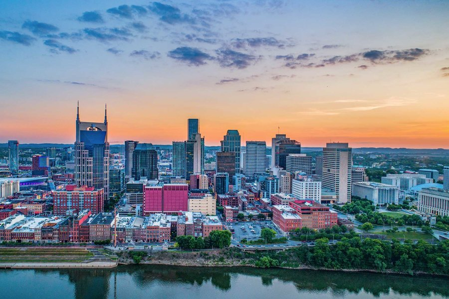
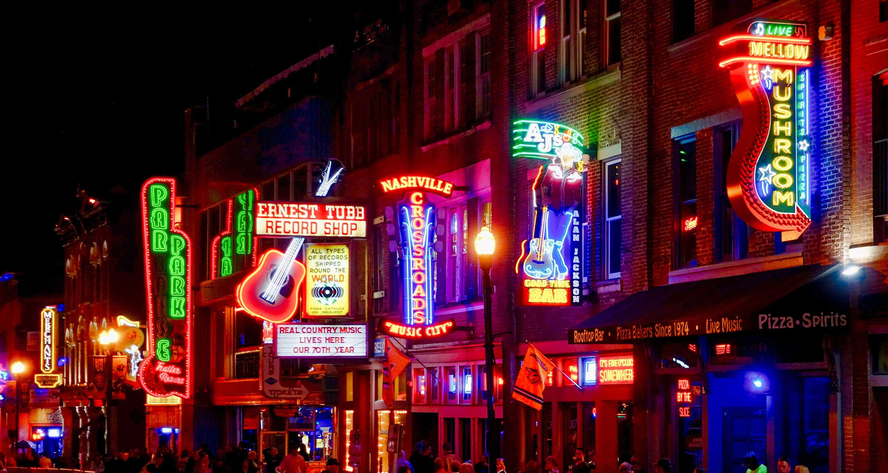

Nashville, Tennessee is the place to be! It has almost everything, from thriving nightlife to quaint stores during the day. Shopping thrives in downtown. There is always live music to enjoy from locals and others who travel. If you're a fan of country music, this is the place for you. There are so many great options to go and hear live music. With great food, drinks, and Southern Hospitality you know that you will have a great experience. Some of the best attractions to visit include Music Row, the Nashville Parthenon, the Grand Ole Opry, the Tennessee State Museum and much more! For the visitors that enjoy architecture and buildings, there is the Belmont Mansion, Belle Meade Plantation, Ryman Auditorium, and the Tennessee State Capital building to explore and tour. A little bit outside of Nashville includes some great state parks where visitors can enjoy beautiful scenery. All things aside, Nashville is a safe place to visit and is great fun!

Questions? Contact visitnashville@gmail.com